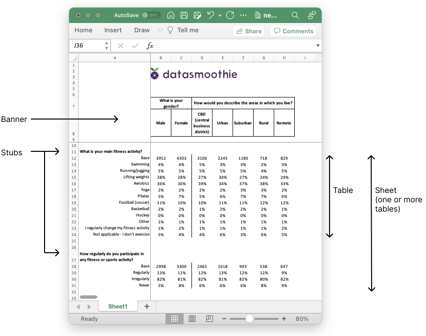

Build Excel tables
Contents
Build Excel tables#
The Tally Python SDK has a flexible feature set to build large Excel data tables and gives the user full, granular control over the content of the tables.

The build object#
Tally implements an object called build which represents each build of outputs. Each build has a list of sheets and each sheet has a list of tables.

If there are more than one sheets in a build, a table of contents is automatically created. A logo can also be included in the build and font familyi and font sizes can be set.
build = tally.Build(
name="Sport survey",
subtitle="Annual research conducted by agency X",
default_dataset=dataset,
table_of_contents=True,
logo='./images/datasmoothie-logo.png'
)
Adding sheets, tables and saving the Excel file#
Once we have created the build, we can add sheets and tables. Every sheet must belong to a build and every table must belong to a sheet.
sheet = build.add_sheet(banner='Wave')
sheet.name = 'Waves'
sheet.add_table(stub={"x":"q1"})
sheet.add_table(stub={"x":"q2"})
sheet.add_table(stub={"x":"q3"})
Adding multiple sheets#
We can use a for loop to add multiple sheets to our build.
for stub in stub_vars:
sheet = build.add_sheet(banner=banner_vars)
sheet.name = dataset.get_variable_text(name=stub)
sheet.add_table(stub={"x":stub})
Creating the Excel document#
Once we’ve added our sheets and tables to the build, we can create the Excel document.
build.save_excel('client_results.xlsx')
A new file will get saved in the location your python script is located, called client_results.xlsx.
Setting build options on a build, sheet, and table level#
Most data-specific and visual options can be set on a build, sheet or table level. For example, the entire build could use a certain variable for weighting, certain sheets can be tested for significance and certain tables could show descriptive statistics.
Setting options on a build level#
Options set on the build level will apply to every table in every sheet, unless otherwise specified. Sheet options override build options and table options override both.
build.options.set_weight('weight_a')
build.options.set_ci(['c%', 'counts'])
The above will weight all results with the variable weight_a and only show both percentages and counts in all tables.
Setting options on a sheet level#
Options can be set on a per-sheet level. If we’ve already set certain options on a build level, these will be overridden by sheet-level options.
build.options.set_stats(['mean'])
sheet1 = build.add_sheet(name="Q1 With means", banner=["locality"])
sheet1.add_table(stub={'x':'q1'})
sheet2 = build.add_sheet(name="Q1 With means and standard deviation", banner=["locality"])
sheet2.options.set_stats(['mean', 'stddev'])
sheet2.add_table(stub={'x':'q2'})
In the above, sheet1 and will have mean calculations included in its tables, whereas sheet2 will have both means and standard deviation. Every other sheet added will have mean calculated, but not standard deviation.
Setting options on a table level#
Options can also be set on a table-level, if there’s only one table in a sheet that should have certain data included.
build.options.set_weight('weight_a')
sheet = build.add_sheet(name="Q1", banner=["locality"])
sheet.add_table(stub={'x':'q1'})
sheet.add_table(stub={'x':'q2'}, options={'weight':'weight_b'})
In the above, every table in the sheet will be weighted with the weight variable weight_a except that last one, which will be weighted with weight_b.
Deciding what data to include#
Tally Excel builds support all the data you would expect to be able to include, such as
Counts
Percentages
Bases (weighted and unweighted)
Significance testing
Descriptive statistics (mean, standard deviation, etc.)
All of the above are options we send to the crosstab method and the options available are shown in the API Reference for the crosstab method.
Significance testing#
Significance testing is done by adding an alpha paremeter (or significance level parameter). This is often 0.05 or 0.10. This can be done on a build, sheet or table level.
# build level
build.options.set_sig_test_levels(0.05)
# sheet level
build.options.set_sig_test_levels(0.05)
# table level
sheet.add_table(stub={'x':'q1', 'sig_level':[0.05]})
Descriptive statistics#
Descriptive statistics are added to tables with the set_stats options for builds and sheets, and the stats option for tables.
build.options.set_stats(['mean'])
sheet10.options.set_stats(['mean', 'stddev'])
sheet10.add_table(stub={'x':'q1', 'stats':['mean', 'stddev']})
Available statistics are
mean: Mean,
min: Min,
max: Max,
median: Median,
var: Sample variance,
varcoeff: Coefficient of variation,
stddev: Std. dev,
sem: Std. err. of mean,
sum: Total Sum,
lower_q: Lower quartile,
upper_q: Upper quartile’
Annotations#
Tables can include annotations that show
what variable was used as a weight
how the base was selected (e.g. Location: London)
the alpha parameter in the significance testing
build.options.set_annotations(True)
sheet.options.set_annotations(True)
Controlling visuals#
Users can set formatting for result types in a table (percentages, counts, stats) and these can be set on the entire table or on a column-by-column basis. The following are the most common commands.
set_formatset_answer_formatset_column_format_for_typeset_base_labelsset_banner_borderset_base_position
For example:
# make all descriptive statistics appear in a certain colour
sheet.options.set_format('stats', {"font_color":"98B4DF"})
# set the format for all base rows, making them bold, with a border and in a color
build.options.set_format('base', {'bold':True, 'border': 1, 'border_color':'efefef'})
# Make the base in column 1 always be bold
sheet.options.set_column_format_for_type('base', 1, {"bold":True})
For more information about each function, see the section about the Build API.
The format dictionary#
Formats are controlled by contstructing a format dictionary. This is a dictionary with keys that indicate what format should be changed and values that indicate how the formats should be set. For example
{'bold': True, 'font_color':efefef, 'align':'left}
For a list of formatting options used to build the formatting dictionary, see the formatting options list
Adding a header/title to a table#
Options can be set on a table level as well, and this can be used to add a header to the table.
sheet.add_table(
stub={...},
options={
'title':{'text':'This is my title', 'format':{'bold':True, 'font_color':'#ebebeb'}}
}
)
For the formatting options available for the header, see the formatting options list.
Formatting options#
The look and format of every question, label and data table can be set to get the right look and feel.
| Category | Description | Property | Example |
|---|---|---|---|
| Font | Font type | 'font_name' |
"Arial" |
| Font size | 'font_size' |
12 |
|
| Font color | 'font_color' |
#efefef |
|
| Bold | 'bold' |
True/False |
|
| Italic | 'italic' |
True/False |
|
| Underline | 'underline' |
True/False |
|
| Strikeout | 'font_strikeout' |
True/False |
|
| Super/Subscript | 'font_script' |
1 = Superscript, 2 = Subscript |
|
| Number | Numeric format | 'num_format' |
See xlsxwriter docs |
| Protection | Lock cells | 'locked' |
True/False |
| Alignment | Horizontal align | 'align' |
left,
center,
right, |
| Vertical align | 'valign' |
top,
vcenter,
bottom, |
|
| Rotation | 'rotation' |
45 (degrees) |
|
| Text wrap | 'text_wrap' |
True/False |
|
| Justify last | 'text_justlast' |
True/False |
|
| Center across | 'center_across' |
True/False |
|
| Indentation | 'indent' |
1,2 (indent level) |
|
| Shrink to fit | 'shrink' |
True/False |
|
| Pattern | Cell pattern | 'pattern' |
0-18 |
| Background color | 'bg_color' |
#efefef |
|
| Foreground color | 'fg_color' |
#efefef |
|
| Border | Cell border | 'border' |
See xlsxwwriter docs |
| Bottom border | 'bottom' |
1,2,3 (see docs for set_border) |
|
| Top border | 'top' |
1,2,3, ... (see docs for set_border) |
|
| Left border | 'left' |
1,2,3, ... (see docs for set_border) |
|
| Right border | 'right' |
1,2,3, ... (see docs for set_border) |
|
| Border color | 'border_color' |
#efefef |
|
| Bottom color | 'bottom_color' |
#efefef |
|
| Top color | 'top_color' |
#efefef |
|
| Left color | 'left_color' |
#efefef |
|
| Right color | 'right_color' |
#efefef |